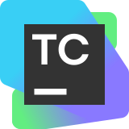

Change your CI.
Keep your Git host.
Use TeamCity with GitHub or another VCS provider. Your repository location doesn’t have to decide your CI.
CI/CD by
Bring your GitHub Actions project. Let your AI agent help set up and run your first TeamCity build
Free TeamCity Cloud access. AI-assisted setup.
Choose where your code lives, check changes before committing, and bring your coding agent into the build process
Use TeamCity with GitHub or another VCS provider. Your repository location doesn’t have to decide your CI.
Build and test local changes with Remote Run. Check the results before creating another troubleshooting commit.
Configure pipelines, run builds, and investigate failures through the TeamCity CLI and MCP.
Build your CI/CD pipeline with TeamCity. Add jobs and steps in the visual editor, or work directly with YAML when you want to edit the configuration as code
Learn moreStart builds, follow their progress, and inspect logs and test results with the TeamCity CLI. Use the same tools yourself or through your coding agent.
Learn moreUse YAML or Kotlin DSL to manage TeamCity configuration in code and reuse common patterns across projects. Review changes alongside the rest of your code.
Learn more“We were seeing around a 70% reduction in build times. Instead of 10 minutes, it was three or four minutes.”
Create your free TeamCity Cloud instance, then continue in your terminal, where your AI agents configure and run your project’s core build and tests. Or as an alternative use TeamCity in the browser.
Use your own repository or try a demo project.

No. Connect your GitHub repository to TeamCity and evaluate a different CI platform while keeping your code where it is.
The campaign setup focuses on your project’s core build and tests. Deployment steps, secrets, triggers, and other workflow behavior need separate review. Treat the first build as the start of your evaluation.
The CLI lets you and your agent work with TeamCity through terminal commands. MCP exposes TeamCity tools to compatible AI clients. Choose the integration that fits how you work; the campaign’s onboarding uses the CLI.
TeamCity supports cloud and self-hosted build agents. Choose infrastructure that fits your toolchain and workload. Options depend on your TeamCity deployment and plan.
Try it with your project, or talk to our team about your GitHub Actions setup.